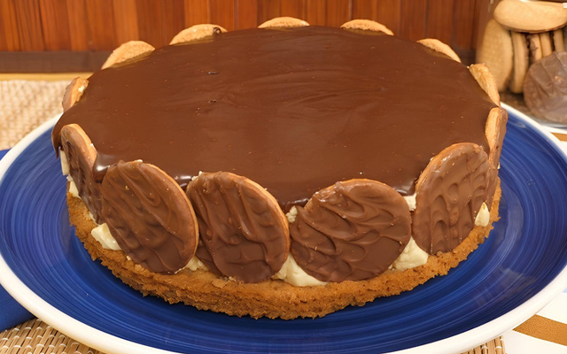

Receitas Doces
1. brigadeiro
Ingredientes
- 1 lata de leite condensado
- 3 colheres de sopa de achocolatado em pó (ou chocolate em pó 50% cacau)
- 1 colher de sopa de manteiga ou margarina
- Granulado de chocolate para decorar (opcional)
Modo de preparo
- Para preparar um delicioso brigadeiro, comece separando os ingredientes: uma lata de leite condensado, duas colheres de sopa de chocolate em pó e uma colher de sopa de manteiga.
- Em uma panela média, coloque o leite condensado, o chocolate em pó e a manteiga. Leve ao fogo baixo e mexa constantemente com uma colher de pau ou espátula de silicone, para que o brigadeiro não grude no fundo nem empelote. Continue mexendo até que a mistura engrosse e comece a desgrudar do fundo da panela — esse é o ponto ideal.
- Quando atingir a consistência desejada, desligue o fogo e transfira o brigadeiro para um prato untado com manteiga. Deixe esfriar completamente.
- Após esfriar, unte as mãos com um pouco de manteiga, faça pequenas bolinhas e passe-as no granulado de chocolate até ficarem bem cobertas. Coloque os brigadeiros em forminhas de papel e sirva.
- Dica: se preferir, você pode servir o brigadeiro em copinhos, sem enrolar, para uma versão prática e cremosa.
2. Bolo de Milho

Ingredientes
- 1/2 copo de óleo leite
- 1 lata de milho verde com a água
- 3 ovos
- 1 e 1/2 copo de açúcar
- 1 copo de milharina
- 1 colher de fermento em pó
Modo de preparo
- Bata todos os ingredientes no liquidificador.
- Leve para assar em forma untada com margarina.
- Asse até dourar.
- Tire do forno e sirva.
3. Torta holandesa

Ingredientes
- 150g de biscoito de maisena
- manteiga sem sal
- 100 g de manteiga sem sal
- 1 xícara de açúcar refinado
- 1 colher (chá) de essência de baunilha
- 200 g de manteiga sem sal
- 500 ml de creme de leite gelado
- 170 g de chocolate meio amargo derretido
- 1 pacote de biscoito calipso
- Triture o biscoito no processador e misture com a manteiga, formando uma farofinha.
- Forre uma forma de aro removível com a farofinha, pressionando bem.
- Pré-asse a massa (180° C), por cerca de 10 minutos.
- Retira a massa do forno e espere esfriar.
Recheio
- Na batedeira, misture o açucar com a manteiga até fica homogêneo.
- Adicione o creme de leite e a essência de baunilha e volte a bater.
Cobertura
- Misture o chocolate meio amargo derretido com o creme de leite até obter uma consistência homogênea.
Montagem
- Depois de preaquecer a massa e deixar esfriar, coloque os biscoitos redondos ao redor da forma.
- Adicione o recheio e leve à geladeira por 4 horas.
- Retire da geladeira e despeje a cobertura por cima.
- Volte à geladeira por mais 6 horas.
- Após as 6h retire da geladeira e sirva a sobremesa